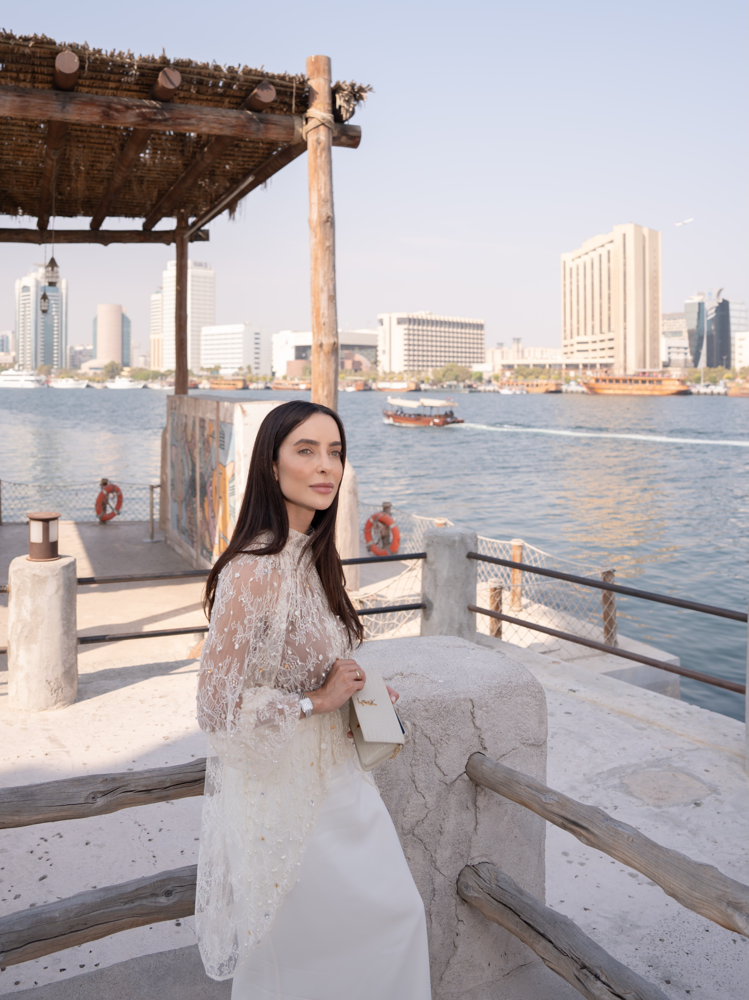

P
DRA. PAULA PÁDUA
ESPECIALISTA EM FIOS FACIAIS
Rejuvenescendo
rostos com
naturalidade
Beleza com ciência,
respeitando a sua essência.
Agendar pelo WhatsApp
→
Método Provoda
↗
Resultados
↗
Estudos clínicos sobre fios de PDO
↗
Palestras e eventos
↗